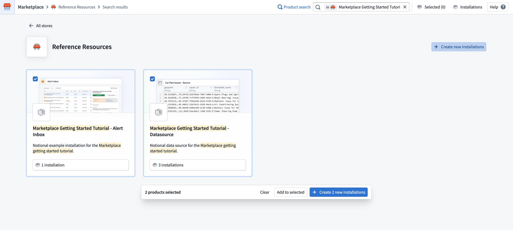
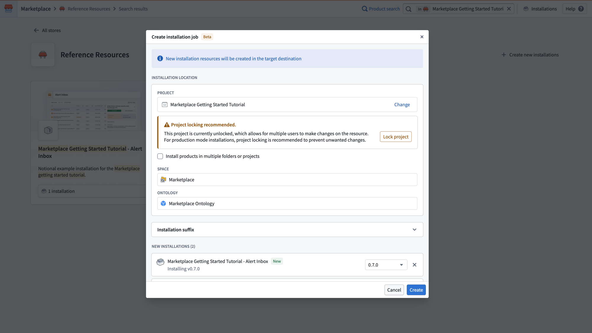
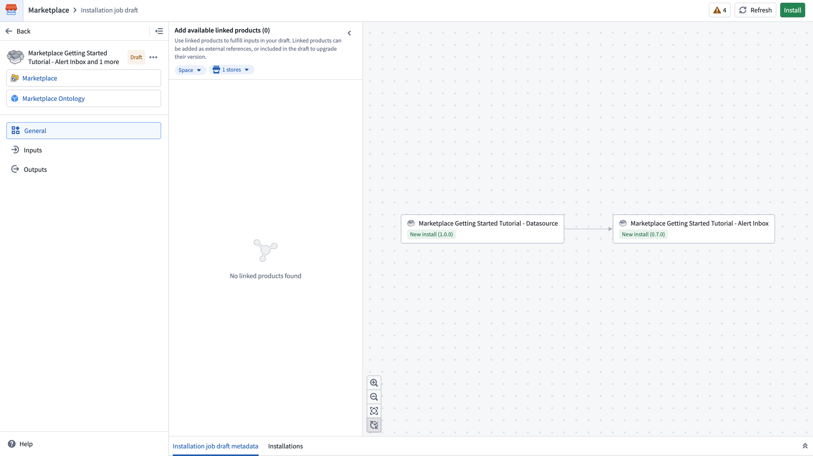
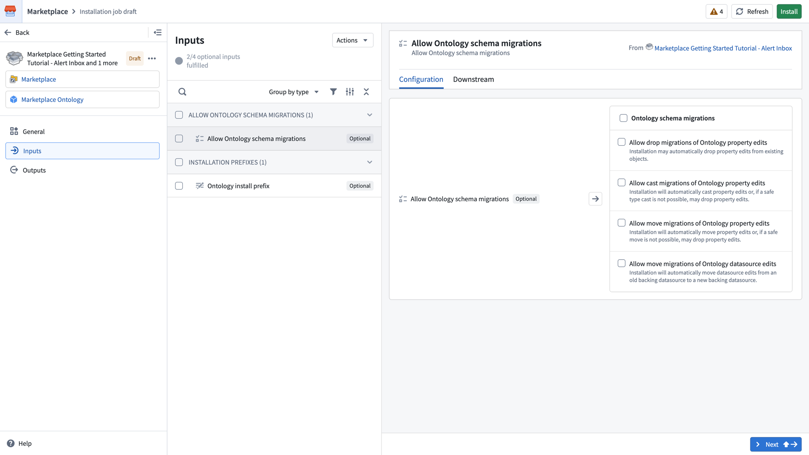
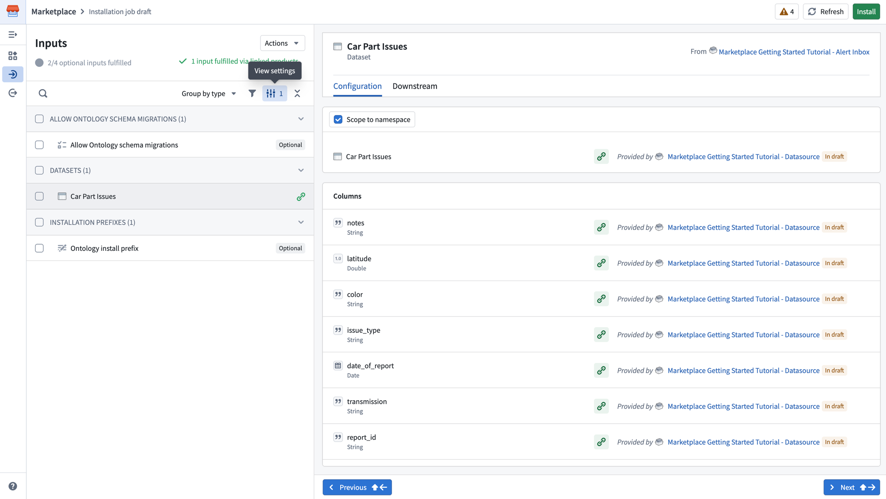
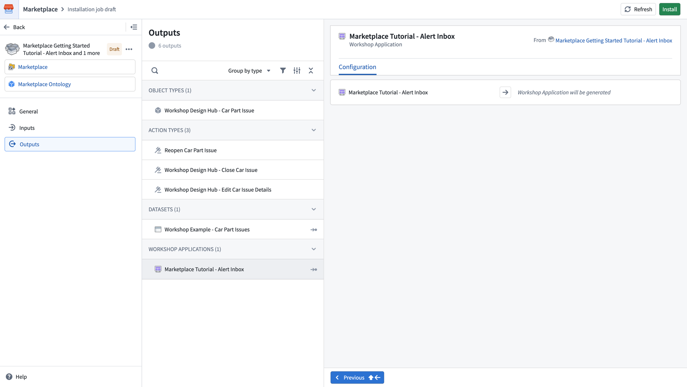
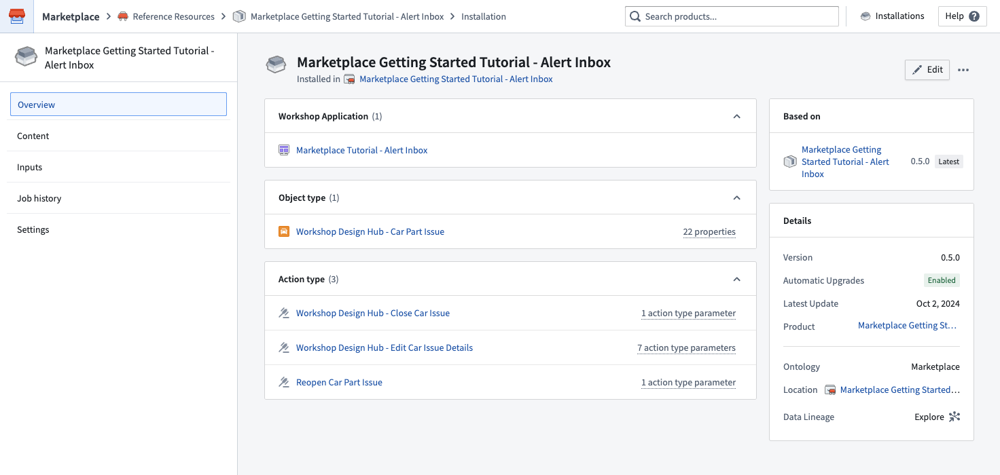
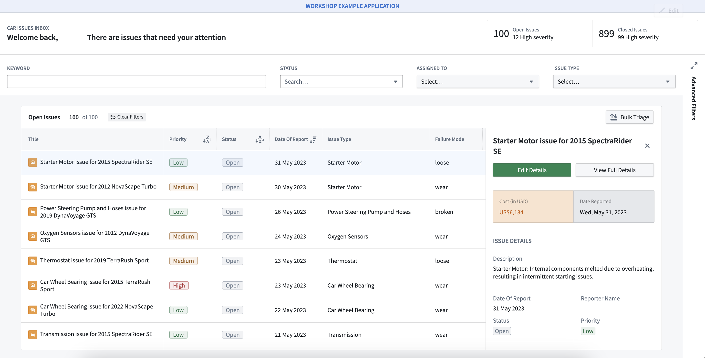

This tutorial walks through a basic installation. For a full reference on all available options, see Install a product.
In this tutorial, you will install an alert inbox application using a notional data source that contains car part issues, which we have provided as its own Marketplace product.
To begin, navigate to Marketplace on your Foundry instance and search for Marketplace Getting Started Tutorial. If you are not able to locate these products, contact Palantir Support to verify your access.
From the search results, select Create new installations in the top right corner. This enables selection mode, allowing you to check the boxes on each product card. Select both the Marketplace Getting Started Tutorial - Alert Inbox and Marketplace Getting Started Tutorial - Datasource products. With both products selected, select Create 2 new installations at the bottom of the page.

A Create installation job dialog will appear, allowing you to configure the installation location for both products at once. Choose a project, and select Create to create the installation job draft. For a full description of all available settings, see Create an installation job.

After creating the installation job, you will land on the General page of the installation job draft. This page displays a dependency graph showing how the selected products relate to each other. In this tutorial, the Alert Inbox product depends on the Datasource product.

The left panel shows navigation for the draft, including the Inputs and Outputs pages. The linked products panel allows you to add available linked products to fulfill inputs in your draft.
Select Inputs in the left panel. Because both the Datasource and Alert Inbox products are included in the same installation job, the Car Part Issues dataset input required by the Alert Inbox is automatically fulfilled by the output of the Datasource product. Fulfilled inputs are hidden by default.

To view the fulfilled input, select View settings and then enable Show inputs fulfilled by linked products. You will see the Car Part Issues dataset listed with its column mappings, provided by the Marketplace Getting Started Tutorial - Datasource product.

The Inputs page displays any remaining optional inputs that are not yet fulfilled. For this tutorial, you do not need to configure any additional inputs. Optional inputs such as Allow Ontology schema migrations and Ontology install prefix can be configured if needed but are not required for the installation to succeed.
You can search, filter, and group inputs by type using the controls at the top of the list. Selecting an input displays its Configuration and Downstream tabs in the right panel.
Select Outputs in the left panel. This page provides a summary of all resources that will be created by the installation, grouped by type.

For the Alert Inbox product, you will see the following outputs:
Workshop Design Hub - Car Part IssueReopen Car Part Issue, Workshop Design Hub - Close Car Issue, Workshop Design Hub - Edit Car Issue DetailsWorkshop Example - Car Part IssuesMarketplace Tutorial - Alert InboxSelecting an output displays its Configuration tab in the right panel, showing details about what will be generated.
Once you are satisfied with the configuration, select Install in the top right corner to begin the installation. You will land on the installation job page where you can monitor progress. Once your installation is complete, select View installation in the upper right corner.
From your installation, open up your Marketplace Tutorial - Alert Inbox application in a new tab. It may take a few minutes for your Car Part Issue objects to index, before which your application will not be available.

You now have an alert inbox workshop application to help you triage your Car Part Issues - Source issues. As long as the required input columns are present, you can install this application again with any issues source to use it for new use cases.
